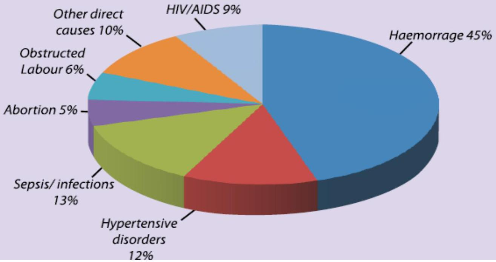

VITAL STATISTICS, SAFE MOTHERHOOD, AND OBSTETRIC PROCEDURES
VITAL STATISTICS IN MIDWIFERY
DEFINITION.
Refers to the systematic collection of numerical figures, related to life and death events then they are summarized and studied.
SPECIFIC OBSTETRICAL STATISTICS.
Refers to those of special interest in obstetric, they include:-
1. BIRTH RATE.
Rate: - Refers to relation of the collected figures to a specific number within the population. The specific no. is generally 1,000 newborn infants, so birth rate is calculated as:
Therefore, accurate records of birth notifications and registration are important tools for correct birth rate. The findings help to estimate the population growth together with other relevant statistics.
2. STILLBIRTH RATE.
Calculated through accounting for total number of stillbirths i.e. both fresh and macerated in a year. Compared to the number of total births/deliveries (live &dead) relate to a group of 1,000 of those births.
NB: - Birth/ delivery is that which occurs as from $24^{\text {th }}$ week of pregnancy.
The findings help to assess the antenatal care and delivery system performance. Take into account when exactly death occurred in terms of whether before arrival to health facility, already admitted but not in labour or in the course of labour.
3. PERINATAL DEATH RATE
Around birth period & $1^{\text {st }}$ week after birth.
Definition of Perinatal Death: "The definition of a foetus weighing at least 500 grams (or 22 weeks gestation), plus the number of early neonatal deaths (up to 7 days)."
Its significance is to evaluate the performance of relevant disciplines i.e. midwives and obstetrician as well as the responsibility of the mother i.e. whether has played her role accurately. Mortality rate is expressed as number of stillbirth and early neonatal deaths per 1,000 total birth (live & still).
The perinatal mortality rate is currently at 29 deaths per 1,000 total births (KDHS, 2014).
4. NEONATAL DEATH RATE.
It's expressed as total number of both early and late neonatal deaths per 1,000 live births.
NEONATAL DEATH: It's demise of newborn within the first 28days of extra-uterine life OR Death of a baby during the neonatal period.
CLASSIFICATION.
- Early neonatal death: Demise that occurs to a neonate within the first week or 07days of birth.
- Late neonatal death: Demise occurring after the first week, but within the neonatal period OR Death of a baby that occurs as from the $8^{\text {th }} - 28^{\text {th }}$ day after birth.
Neonatal mortality rate is currently at 22 deaths per 1,000 live births (KDHS, 2014).
6. INFANT DEATH (MORTALITY) RATE (IMR)
It's expressed as total number of neonatal and post-neonatal deaths per 1,000 live births.
KDHS 2013/2014 REPORT!
- The infant mortality rate is 39 deaths per 1,000 live births, and under-5 mortality is 52 deaths per 1,000 live births.
- At these levels, currently, about one in every 26 Kenyan children dies before reaching age 1, and about one in every 19 does not survive to his or her fifth birthday.
7. MATERNAL DEATH (MATERNAL MORTALITY RATE- MMR)
Definition: Death of a woman while pregnant or within 42 days (6weeks) of termination of pregnancy, irrespective of the duration and site of pregnancy, from any cause related to/or worsened by the pregnancy or its management but not from accidental or incidental causes.
According to KDHS (2013/2014) reports of maternal mortality ratio of 362 deaths per 100,000 live births.
SAFE MOTHERHOOD
Refers to empowerment of women of reproductive age ( $15-49 \mathrm{yrs}$ ) to have quality services hence a healthy pregnancy, safe delivery and healthy neonate. Therefore safe motherhood is the model in which maternal morbidity and mortality as well as fetal and neonatal deaths and morbidity are expected to be reduced due to the following integrated services which serves as Pillar.
- Family Planning: The individuals or couples have the right information. This helps them make informed decisions in terms of planning on the timing, number and spacing of the pregnancies.
- Focused Antenatal Care: Aimed at early detection and treatment of complications as well as preventing them where possible.
- Clean and safe deliveries: By ensuring that all birth attendants have knowledge, skills, positive attitude and equipment's needed to perform clean and safe delivery. Simultaneously provides postpartum care to the mother and the baby.
- Prevention of mother to child transmission of HIV/AIDS during pregnancy, child birth or through breastfeeding, by taking the most appropriate precautions.
- Neonatal Care: The goal is to offer optimal care to prevent complications that may arise after birth.
Foundations of the Model
- SKILLED ATTENDANTS AND ENABLING ENVIRONMENT TO PROVIDE QUALITY CARE.
A skilled attendant is a health professional with midwifery skills. They have been trained to proficiency in the skills needed to manage normal deliveries, postnatal period and diagnose or refer obstetric complications- does not include traditional birth attendants (TBAs)
- SUPPORTIVE HEALTH SYSTEMS.
Effective communication between health care providers is essential for management of obstetric emergencies for ensuring continuity of care. A functional referral system is very important in terms of 24 hour access to means of transport, office, telephone, good record keeping to facilitate in writing of a detailed referral notes.
- COMMUNITY ACTION PARTNERSHIPS.
This cannot be underestimated. This refers to community mobilization, particularly women, their family (particularly the spouse) and local leaders as well as health care providers of every level, e.g. TBAs.
- EQUITY FOR ALL/REPRODUCTIVE RIGHTS.
Women's health is basically the nation's health. Therefore, uniquities for any reason have to be dealt with in the best way possible, so enabling policies based on strong political support and national ownership are vital to attract resources for maternal and newborns health.
CLASSIFICATION - MATERNAL DEATHS.
- True or Direct Obstetrical Death. Its demise resulting from obvious obstetrical complications occurring during either during pregnancy, labour, or in puerperium.
- Indirect Obstetrical Death. Refers to demise due to either a chronic condition or a demise that develops prenatally, but not related to pregnancy state.
- Coincidental/ Incidental/ Fortuitous Death. That which results from other caused factors, not related to obstetric in any way but occurring either during pregnancy, labor or puerperium.
- Later (late) death. Demise caused by either direct or indirect obstetrical factor. Death occurs after puerperium but within the $1^{\text {st }}$ year of abortion or delivery.
DOMICILIARY SERVICES
Also referred to as: - POSTNATAL HOME VISIT.
DESCRIPTION:
It's the care given to the normal puerperal mother and her newborn (neonate) at her home environment after discharge from a health institution (facility). Before discharge, they are carefully assessed to ensure no unforeseen complications with the domestic arrangements. So discuss with the couple in order to gain consent for the services.
OBJECTIVES.
- To offer routine post-natal care to mother and neonate: - hence monitor their recovery and developments i.e. physically and psychologically.
- To assess realities of motherhood in terms of:- Development of independent skills of caring for herself and her baby in a home environment and her attitude towards the baby.
- To assess the reaction of other family members as each comes to term with their altered roles.
- To offer an opportunity for the parents to express any anxieties about the baby, other children or their own relationship e.g. sexuality.
- To share relevant health messages such as diet using locally available and affordable foods, hygiene and family planning.
OBSTETRIC OPERATION AND PROCEDURES: Induction of labour
Definition:-
Induction of labour is the artificial initiation of uterine contractions prior to their spontaneous onset leading to progressive dilatation and delivery of the baby.
Indication:-
The purpose of an induction is to achieve benefit to the health of the mother and or baby when their suspected or confirmed risk to mother and or baby.
- Maternal diseases: Diabetes, Hypertention, renal diseases, cardiac disease.
- pregnancy - related conditions: pre eclampsia, intra hepatic choleostasis of pregnancy, APH at term, placental abruption.
- fetal indication: intra uterine growth restricted, oligohydramnious, Iso immunization.
- Pregnancy passing 41 weeks.
- Pre-labour spontaneous rupture of membrane (PLROM).
- Maternal request.
Bishop score
| SCORE | DILATATION (CM) | EFFACEMENT (%) | STATION (3+ - 3-) | CERVICAL CONSISTENCY | CERVICAL POSITION |
|---|---|---|---|---|---|
| 0 | closed | 0-30% | 3- | firm | posterior |
| 1 | 1-2 | 40-50% | 2- | medium | Mid position |
| 2 | 3-4 | 60-70% | 1- | soft | anterior |
| 3 | 5 ≤ | 80% ≤ | 2+,1+ | - | - |
Methods of induction:-
- Medical: Prostaglandin, Oxytocin.
- Surgical: Membrane sweeping, Amniotomy.
- Combination
1- Medical methods:-
If the cervix is unfavorable (un-ripe):= prostaglandin:
- local vaginal administration: tablet ( 0.5 mg ), pessary ( 3 mg ), gelly ( 1 mg ).
- side effect: Gastro intestinal upset, Uterine hyper stimulation (rare).
vIf cervix is favourable (ripe):= oxytocin:
- its octa peptide hormone secreted from para ventricular and supra optic nuclei of hypothalamus, stored in posterior pituitary and released in pulsatile manner.
- Oxytocin is administered in synthetic form pitocin or syntocinon used by continous I.V infusion (pump or drip) after amniotomy to stimulate uterine contraction, also used to augment and accelerate labour.
- The usual dose is 5 IU/500 ml normal saline.
- side effects: uterine hyperstimulation, poor uterine contraction, Anti diuretic effect, rupture of uterus, Neonatal hyperbilirubinemia.
2-Surgical methods:-
A-membrane sweeping: increased likelihood of spontaneous labour within 48 hours due to local release of prostaglandin.
B-Amniotomy (AROM):
- Fore-water amniotomy: Amniohook, Toothed forceps.
- Hind-water amniotomy: Drew-somyth catheter.
Complications:
- failure to induce effective contractions.
- bleeding c damage to the cervix.
- placental separation due to sudden reduction of the volume of liquor.
- infections.
- amniotic fluid embolism.